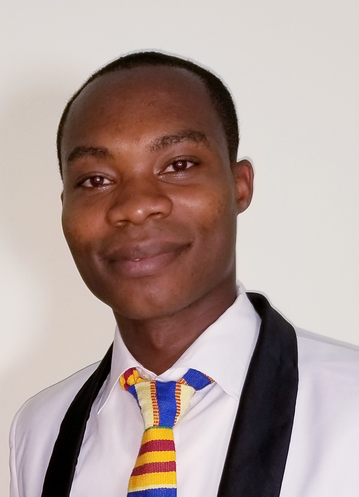

Michael Mensah | WDD 130
Hello! My name is Michael Mensah and I am from Ghana, I enjoy learning new skill
I am a network engineer. As an engineer, I design, build, and maintain communication networks that enable businesses and organizations to function. I have a good understanding of computer networks, troubleshoot issues, and work with a range of hardware and software technologies. I have strong communication skill which is essential for collaborating with other IT professionals, end-users, and business stakeholders. I play a critical role in maintaining the infrastructure that supports online transactions, remote work, and communication, making it a challenging and rewarding career.